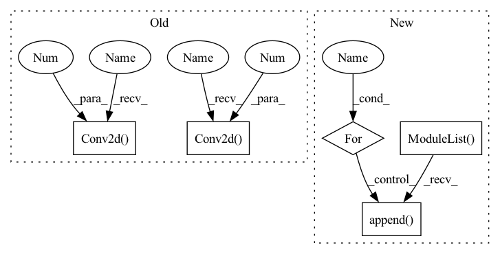

Pattern ID :48

Before Change
self.conv2 = nn.Sequential(
// pw
nn.Conv2d(oup, hidden_dim, 1, 1, 0, bias=False),
nn.BatchNorm2d(hidden_dim),
nn.ReLU(inplace=False),
// dw
nn.Conv2d(hidden_dim, hidden_dim, 3, 1, 1, groups=hidden_dim, bias=False),
nn.BatchNorm2d(hidden_dim),
nn.ReLU(inplace=False),
// pw-linear
After Change
nn.BatchNorm2d(oup),
)
self.conv2 = torch.nn.ModuleList()
for i in range(n):
self.conv2.append(IRBlock(oup, hidden_dim))
def forward(self, x):
x = self.conv1(x)
In pattern: SUPERPATTERN
Frequency: 3
Non-data size: 5
Instances
Fragment ID: 230403
Project Name: fire717/movenet.pytorch
Commit Name: 6eb59cd47bfde753530ed236335910bed9ba7c1d
Time: 2022-08-12
Author: fire15@126.com
File Name: lib/models/movenet_mobilenetv2.py
M Class Name: InvertedResidual
N Class Name: InvertedResidual
M Method Name: __init__(6)
N Method Name: __init__(6)
M Parent Class: nn.Module
N Parent Class: nn.Module
M File Name: lib/models/movenet_mobilenetv2.py
N File Name: lib/models/movenet_mobilenetv2.py
M Start Line: 83
M End Line: 113
N Start Line: 98
N End Line: 120
'>
Before Change
self.conv2 = nn.Sequential(
// pw
nn.Conv2d(oup, hidden_dim, 1, 1, 0, bias=False),
nn.BatchNorm2d(hidden_dim),
nn.ReLU(inplace=False),
// dw
nn.Conv2d(hidden_dim, hidden_dim, 3, 1, 1, groups=hidden_dim, bias=False),
nn.BatchNorm2d(hidden_dim),
nn.ReLU(inplace=False),
// pw-linear
After Change
nn.BatchNorm2d(oup),
)
self.conv2 = torch.nn.ModuleList()
for i in range(n):
self.conv2.append(IRBlock(oup, hidden_dim))
def forward(self, x):
x = self.conv1(x)
'>
Fragment ID: 230402
Project Name: fire717/movenet.pytorch
Commit Name: 6eb59cd47bfde753530ed236335910bed9ba7c1d
Time: 2022-08-12
Author: fire15@126.com
File Name: lib/models/movenet_mobilenetv2.py
M Class Name: InvertedResidual
N Class Name: InvertedResidual
M Method Name: __init__(6)
N Method Name: __init__(6)
M Parent Class: nn.Module
N Parent Class: nn.Module
M File Name: lib/models/movenet_mobilenetv2.py
N File Name: lib/models/movenet_mobilenetv2.py
M Start Line: 83
M End Line: 113
N Start Line: 98
N End Line: 120
'>
Before Change
self.use_batch_norm = use_batch_norm
n_channels = observation_shape[0]
self.conv1 = nn.Conv2d(n_channels, 32, kernel_size=8, stride=4)
self.conv2 = nn.Conv2d(32, 64, kernel_size=4, stride=2)
self.conv3 = nn.Conv2d(64, 64, kernel_size=3, stride=1)
if use_batch_norm:
self.bn1 = nn.BatchNorm2d(32)
After Change
// convolutional layers
in_channels = [observation_shape[0]] + [f[0] for f in filters[:-1]]
self.convs = nn.ModuleList()
self.conv_bns = nn.ModuleList()
for in_channel, f in zip(in_channels, filters):
out_channel, kernel_size, stride = f
conv = nn.Conv2d(in_channel,
out_channel,
kernel_size=kernel_size,
stride=stride)
self.convs.append(conv)
if use_batch_norm:
self.conv_bns.append(nn.BatchNorm2d(out_channel))
// last dense layer
self.fc = nn.Linear(self._get_linear_input_size(), feature_size)
if use_batch_norm:
'>
Fragment ID: 230401
Project Name: takuseno/d3rlpy
Commit Name: 557b11a8d5cf75edfc0a2928399d5192d1757ddb
Time: 2020-06-16
Author: takuma.seno@gmail.com
File Name: skbrl/models/torch/heads.py
M Class Name: PixelHead
N Class Name: PixelHead
M Method Name: __init__(5)
N Method Name: __init__(3)
M Parent Class: nn.Module
N Parent Class: nn.Module
M File Name: skbrl/models/torch/heads.py
N File Name: skbrl/models/torch/heads.py
M Start Line: 11
M End Line: 22
N Start Line: 8
N End Line: 43
'>
Before Change
self.conv1 = SpectralConv2d(self.width, self.width, self.modes1, self.modes2)
self.conv2 = SpectralConv2d(self.width, self.width, self.modes1, self.modes2)
self.conv3 = SpectralConv2d(self.width, self.width, self.modes1, self.modes2)
self.w0 = nn.Conv2d(self.width, self.width, 1)
self.w1 = nn.Conv2d(self.width, self.width, 1)
self.w2 = nn.Conv2d(self.width, self.width, 1)
self.w3 = nn.Conv2d(self.width, self.width, 1)
self.fc1 = nn.Linear(self.width, 128)
After Change
self.fc0 = nn.Linear(4, self.width) // input channel is 3: (a(x, y), x, y)
self.n_layers = n_layers
self.convs = nn.ModuleList([])
self.ws = nn.ModuleList([])
for _ in range(n_layers):
conv = SpectralConv2d(self.width, self.width, self.modes1, self.modes2)
self.convs.append(conv)
w = nn.Conv2d(self.width, self.width, 1)
self.ws.append(w)
'>
Fragment ID: 230426
Project Name: alasdairtran/fourierflow
Commit Name: 7842a35de15675d4f30589c1775d21ed818e352c
Time: 2022-09-22
Author: alasdair.tran@gmail.com
File Name: fourierflow/modules/fno_mesh_2d_airfoil.py
M Class Name: FNOMesh2DAirfoil
N Class Name: FNOMesh2DAirfoil
M Method Name: __init__(5)
N Method Name: __init__(4)
M Parent Class: nn.Module
N Parent Class: nn.Module
M File Name: fourierflow/modules/fno_mesh_2d_airfoil.py
N File Name: fourierflow/modules/fno_mesh_2d_airfoil.py
M Start Line: 59
M End Line: 72
N Start Line: 57
N End Line: 75